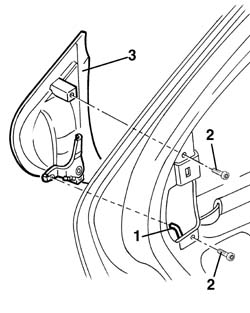
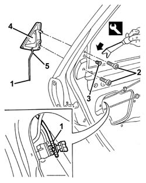

7010C10 rear door outer handle - r r with door panel removed
- Path
- Procedures > 70 FITTINGS > 7010 PASSENGER COMPARTMENT REAR SIDE DOORS > 7010C rear lock controls > 7010C10 rear door outer handle - r r with door panel removed
- Kind
- repair procedure (removal / refitting; the operation number is the code)
- Applies to
- all engines; all production periods
- Interactive page
- https://sloeber94.github.io/elrnDB-a156/en/#/3238647
Applies to: all engines; all production periods
 Removing
Removing
 Refitting
Refitting1. Disconnect the door opening link from the outer handle side.
2. Unscrew the bolts
3. Remove the outer handle.

Applies to: all engines; all production periods
Refitting
RemovingCheck that the outer handle and the handle mechanism are undamaged.
Position the outer handle.
Do up the bolts.
Connect the door opening link.
Applies to: all engines; all production periods; only with equipment: Station Wagon
Removing
Refitting7010A04 rear side door water guard protection - r r or arrange with door panel removed
7010E94 frame reinforcement bracket on one rear door one lh or rh r r
7010E93 partition on rear door, lh or rh - r r with door panel removed
1. Disconnect the link between outer handle and lock from the lock side.
2. Undo the handle retaining bolts.
3. Prise up the retainer using the appropriate tool. (Operation necessary to facilitate handle removal).
 | Name | Country |
|---|---|---|
3 | Scraper blade | 1.823.015.000 |
4. Remove the outer handle by prising out of its housing.
5. Disconnect the handle link if necessary.

Applies to: all engines; all production periods; only with equipment: Station Wagon
Refitting
RemovingCheck that the outer handle is undamaged.
Connect the link to the handle, if it was removed.
Fit the outer handle in its housing and secure with bolts.
Fit the retainer.
Connect the link between outer handle and lock from the lock side.
Check that the outer handle and the lock are working properly.
7010E93 partition on rear door, lh or rh - r r with door panel removed
7010E94 frame reinforcement bracket on one rear door one lh or rh r r
7010A04 rear side door water guard protection - r r or arrange with door panel removed
Topics linked from this page (3)
- 7010A04 rear side door water guard protection - r r or arrange with door panel removed
- 7010E93 partition on rear door, lh or rh - r r with door panel removed
- 7010E94 frame reinforcement bracket on one rear door one lh or rh r r
Topics that link to this page (8)
- 7010C11 rear side door outside handle-r r
- 7010D12 fixed window glass element - r r
- 7010D14 rear side door descending window glass - r r with door panel (and mount frame) removed
- 7010D15 rear side door descending window glass-r r
- 7010D18 rear side door descending window glass channel r r
- 7010D26 rear side descending window glass scraper (outer) r r
- 7010E50 rear side door pillar trim (one) lh or rh - r r
- 7205E38 Stripping REAR SIDE DOOR